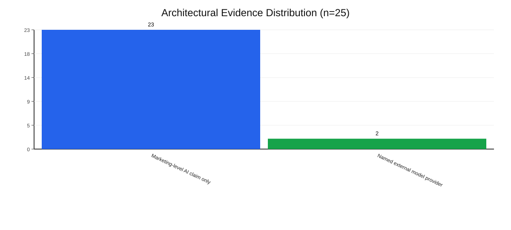
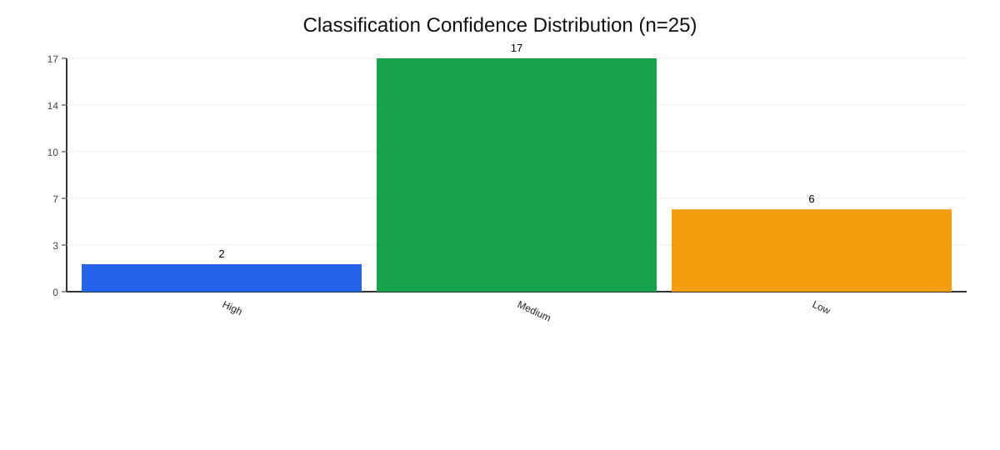
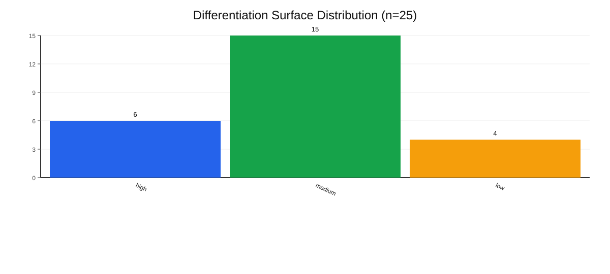

Architectural Evidence Level Distribution

This report analyzes 25 AI-powered product design and UX research tools using a citation-backed dataset and conservative classification rules. The post-adversarial distribution of estimated_differentiation_surface is high: 6, medium: 15, and low: 4, indicating that most tools currently differentiate through workflow execution and embedding rather than hard model-level defensibility.
Transparency remains limited: 23/25 tools are in Marketing-level AI claim only, while only 2/25 explicitly name external model providers. Confidence is mostly Medium (17/25), reflecting observable feature behavior with limited architectural disclosure.
1. Dataset scope: 25 tools with explicit AI positioning relevant to product design, UI/UX generation, or UX research.
2. Fact base: citation-backed claims in /Users/ahkeewan/Documents/Projects/ai-design-tools-agent-eval/data/raw/tool_list.csv.
3. Classification base: SCHEMA v2 fields in /Users/ahkeewan/Documents/Projects/ai-design-tools-agent-eval/data/processed/classified_tools.csv.
4. Strategic pass: per-tool evaluation of proprietary_data_moat, workflow_depth, ecosystem_embedding, switching_cost_signal, and estimated_differentiation_surface.
5. Adversarial revisions: UserTesting, Dovetail, and Looppanel were challenged and downgraded from high to medium differentiation surface when defensibility appeared orchestration-led.
6. Rule of conservatism: if a signal was not directly observable from existing cited evidence, it was downgraded or labeled unknown.
Observed architectural evidence distribution (n=25):
Marketing-level AI claim only: 23 (92%)Named external model provider: 2 (8%)Observed confidence distribution (n=25):
High: 2 (8%)Medium: 17 (68%)Low: 6 (24%)Unknown: 0Interpretation:
Supporting artifacts:
/Users/ahkeewan/Documents/Projects/ai-design-tools-agent-eval/outputs/figures/architectural_evidence_level_distribution.svg/Users/ahkeewan/Documents/Projects/ai-design-tools-agent-eval/outputs/figures/architectural_evidence_level_distribution.csv/Users/ahkeewan/Documents/Projects/ai-design-tools-agent-eval/outputs/figures/classification_confidence_distribution.svg/Users/ahkeewan/Documents/Projects/ai-design-tools-agent-eval/outputs/figures/classification_confidence_distribution.csvPost-adversarial differentiation distribution (n=25):
High: 6 (24%)Medium: 15 (60%)Low: 4 (16%)Interpretation:
Supporting artifacts:
/Users/ahkeewan/Documents/Projects/ai-design-tools-agent-eval/outputs/figures/estimated_differentiation_surface_distribution.svg/Users/ahkeewan/Documents/Projects/ai-design-tools-agent-eval/outputs/figures/estimated_differentiation_surface_distribution.csv20/25 tools use a Hybrid execution model, suggesting AI is mostly embedded in broader product workflows.11/25 tools are concentrated in Research synthesis, making it the most crowded value layer.Supporting artifacts:
/Users/ahkeewan/Documents/Projects/ai-design-tools-agent-eval/outputs/figures/execution_model_inferred_distribution.csv/Users/ahkeewan/Documents/Projects/ai-design-tools-agent-eval/outputs/figures/value_layer_inferred_distribution.csv/Users/ahkeewan/Documents/Projects/ai-design-tools-agent-eval/outputs/figures/core_capability_layer_inferred_distribution.csvIn this dataset, differentiation in AI design tooling appears to live primarily in workflow ownership and context accumulation, not in clearly documented model exclusivity. Shared foundation-model access likely compresses model-layer advantage; defensibility shifts toward where teams run recurring work, store longitudinal insight artifacts, and integrate decisions into operational pipelines.
Conservative strategic takeaway:
Primary datasets:
/Users/ahkeewan/Documents/Projects/ai-design-tools-agent-eval/data/raw/tool_list.csv/Users/ahkeewan/Documents/Projects/ai-design-tools-agent-eval/data/processed/classified_tools.csvSummary metrics:
/Users/ahkeewan/Documents/Projects/ai-design-tools-agent-eval/outputs/figures/summary_metrics.jsonCharts (SVG):
/Users/ahkeewan/Documents/Projects/ai-design-tools-agent-eval/outputs/figures/architectural_evidence_level_distribution.svg/Users/ahkeewan/Documents/Projects/ai-design-tools-agent-eval/outputs/figures/classification_confidence_distribution.svg/Users/ahkeewan/Documents/Projects/ai-design-tools-agent-eval/outputs/figures/estimated_differentiation_surface_distribution.svgChart data (CSV):
/Users/ahkeewan/Documents/Projects/ai-design-tools-agent-eval/outputs/figures/architectural_evidence_level_distribution.csv/Users/ahkeewan/Documents/Projects/ai-design-tools-agent-eval/outputs/figures/classification_confidence_distribution.csv/Users/ahkeewan/Documents/Projects/ai-design-tools-agent-eval/outputs/figures/estimated_differentiation_surface_distribution.csv/Users/ahkeewan/Documents/Projects/ai-design-tools-agent-eval/outputs/figures/core_capability_layer_inferred_distribution.csv/Users/ahkeewan/Documents/Projects/ai-design-tools-agent-eval/outputs/figures/execution_model_inferred_distribution.csv/Users/ahkeewan/Documents/Projects/ai-design-tools-agent-eval/outputs/figures/value_layer_inferred_distribution.csvThese visuals are generated from the CSV distributions in outputs/figures.


